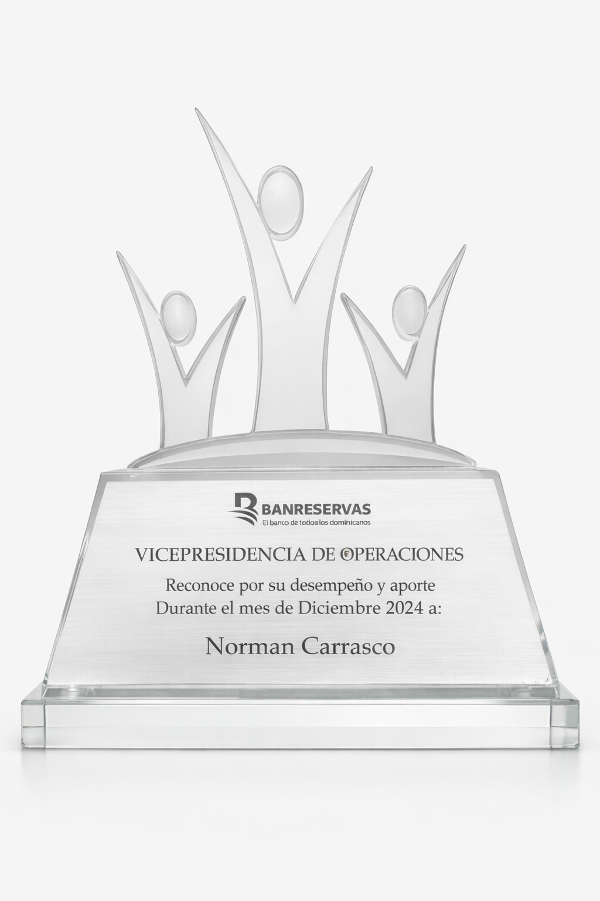
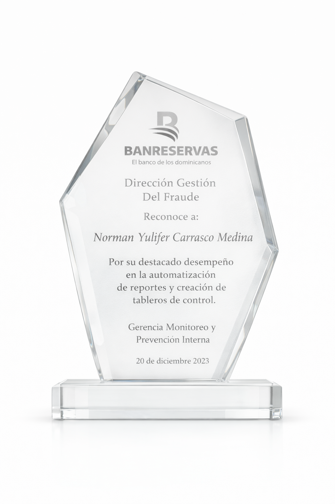
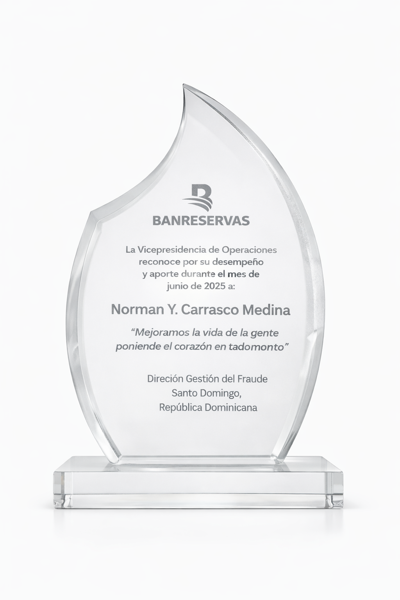

Analista del Año 2020
Reconocimiento por excelente desempeño, dedicación y compromiso durante el año en la GSIG. Destaca la calidad del trabajo analítico y la mejora continua en procesos críticos.
Data & Analytics | Applied AI · BI · Data Engineering
Combino ciencia de datos, prevención de fraude y business intelligence para diseñar soluciones que reducen pérdidas y mejoran la toma de decisiones en banca y negocios digitales.
Galicia, España · Disponible para remoto en España e híbrido en Galicia
Python · SQL · Power BI · DAX
ETL/ELT · IBM DataStage · Data Warehousing · SQL Server · Oracle PL/SQL
scikit-learn · pandas · NumPy
C# · .NET · REST APIs · Git/GitHub
Ingeniero en Informática con experiencia en analítica, Business Intelligence, Data Engineering y applied AI. He trabajado en entornos bancarios, fraude, reporting y toma de decisiones operativa.
Mi perfil combina liderazgo técnico, análisis de datos, automatización y mejora continua aplicada a problemas reales de negocio, especialmente en banca, prevención de fraude y gestión del riesgo operativo.
Reconocimiento por excelente desempeño, dedicación y compromiso durante el año en la GSIG. Destaca la calidad del trabajo analítico y la mejora continua en procesos críticos.

Reconocimiento por destacado desempeño en la automatización de reportes y creación de tableros de control. Otorgado por la Gerencia Monitoreo y Prevención Interna.

Reconocimiento por desempeño y aporte durante el mes de diciembre 2024, otorgado por la Vicepresidencia de Operaciones — Dirección Gestión del Fraude.

Reconocimiento por desempeño y aporte durante el mes de junio 2025, otorgado por la Vicepresidencia de Operaciones — Dirección Gestión del Fraude.
Reconocido como Analista del Año 2020 por desempeño, dedicación y compromiso en proyectos críticos de GSIG en Banreservas.
Premiado por la automatización de reportes y creación de tableros de control que mejoraron la eficiencia operativa y la toma de decisiones en Monitoreo y Prevención Interna.
Testimonios de colegas y colaboradores destacan la colaboración, apoyo al equipo y enfoque en resultados compartidos en entornos de alta exigencia.
Lideré la migración ETL a IBM DataStage y la salida a producción del core bancario Signature garantizando continuidad operativa sin interrupciones.
Traduzco análisis técnicos en reportes ejecutivos para dirección y gerencia, facilitando decisiones estratégicas basadas en datos en entornos bancarios.
Dirijo un equipo de 5 especialistas compartiendo conocimiento, fomentando el crecimiento profesional y alineando capacidades técnicas con objetivos del área.
¿Tienes una oportunidad o proyecto relacionado con datos, analítica o IA? Hablemos.